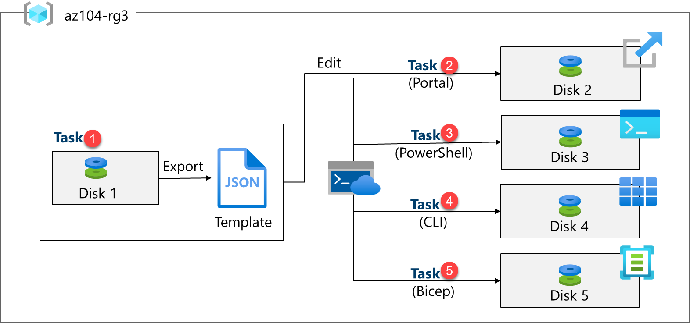
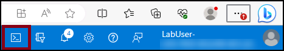

Lab - Manage Azure Resources by using Azure Resource Manager Templates¶
Lab Introduction¶
In this lab, you learn how to automate resource deployments. You learn about Azure Resource Manager templates and Bicep templates. You learn about the different ways of deploying the templates.
This lab requires an Azure subscription. Your subscription type may affect the availability of features in this lab. You may change the region, but the steps are written using East US.
Estimated Timing: 50 Minutes¶
Interactive Lab Simulations¶
There are interactive lab simulations that you might find useful for this topic. The simulation lets you to click through a similar scenario at your own pace. There are differences between the interactive simulation and this lab, but many of the core concepts are the same. An Azure subscription is not required.
-
Manage Azure resources by using Azure Resource Manager templates. Review, create, and deploy a managed disks with a template.
-
Create a virtual machine with a template. Deploy a virtual machine with a QuickStart template.
Lab Scenario¶
Your team wants to look at ways to automate and simplify resource deployments. Your organization is looking for ways to reduce administrative overhead, reduce human error and increase consistency.
Architecture Diagram¶

Job Skills¶
- Task 1: Create an Azure Resource Manager template.
- Task 2: Edit an Azure Resource Manager template and redeploy the template.
- Task 3: Configure the Cloud Shell and deploy a template with Azure PowerShell.
- Task 4: Deploy a template with the CLI.
- Task 5: Deploy a resource by using Azure Bicep.
Task 1: Create an Azure Resource Manager Template¶
In this task, we will create a managed disk in the Azure portal. Managed disks are storage designed to be used with virtual machines. Once the disk is deployed you will export a template that you can use in other deployments.
-
Sign in to the Azure portal -
https://portal.azure.com. -
Search for and select
Disks. -
On the Disks page, select Create.
-
On the Create a managed disk page, configure the disk and then select Ok.
Setting Value Subscription your subscription Resource Group az104-rg3(If necessary, select Create new.)Disk name az104-disk1Region East US Availability zone No infrastructure redundancy required Source type None Performance Standard HDD (change size) Size 32 Gib Note: We are creating a simple managed disk so you can practice with templates. Azure managed disks are block-level storage volumes that are managed by Azure.
-
Click Review + Create then select Create.
-
Monitor the notifications (upper right) and after the deployment select Go to resource.
-
In the Automation blade, select Export template.
-
Take a minute to review the Template and Parameters files.
-
Click Download and save the templates to the local drive. This creates a compressed zipped file.
-
Use File Explorer to extract the content of the downloaded file into the Downloads folder on your computer. Notice there are two JSON files (template and parameters).
Did you know? You can export an entire resource group or just specific resources within that resource group.
Task 2: Edit an Azure Resource Manager template and then redeploy the template¶
In this task, you use the downloaded template to deploy a new managed disk. This task outlines how to quicky and easily repeat deployments.
-
In the Azure portal, search for and select
Deploy a custom template. -
On the Custom deployment blade, notice there is the ability to use a Quickstart template. There are many built-in templates as shown in the drop-down menu.
-
Instead of using a Quickstart, select Build your own template in the editor.
-
On the Edit template blade, click Load file and upload the template.json file you downloaded to the local disk.
-
Within the editor pane, make these changes.
- Change disks_az104_disk1_name to
disk_name(two places to change) - Change az104-disk1 to
az104-disk2(one place to change)
- Change disks_az104_disk1_name to
-
Notice this is a Standard disk. The location is eastus. The disk size is 32GB.
-
Save your changes.
-
Don't forget the parameters file. Select Edit parameters, click Load file and upload the parameters.json.
-
Make this change so it matches the template file.
Change disks_az104_disk1_name to disk_name (one place to change)
-
Save your changes.
-
Complete the custom deployment settings:
Setting Value Subscription your subscription Resource Group az104-rg3Region (US) East US) Disk_name az104-disk2 -
Select Review + Create and then select Create.
-
Select Go to resource. Verify az104-disk2 was created.
-
On the Overview blade, select the resource group, az104-rg3. You should now have two disks.
-
In the Settings section, click Deployments.
Note: All deployments details are documented in the resource group. It is a good practice to review the first few template-based deployments to ensure success prior to using the templates for large-scale operations.
-
Select a deployment and review the content of the Input and Template blades.
Task 3: Configure the Cloud Shell and Deploy a Template with PowerShell¶
In this task, you work with the Azure Cloud Shell and Azure PowerShell. Azure Cloud Shell is an interactive, authenticated, browser-accessible terminal for managing Azure resources. It provides the flexibility of choosing the shell experience that best suits the way you work, either Bash or PowerShell. In this task, you use PowerShell to deploy a template.
- Select the Cloud Shell icon in the top right of the Azure Portal. Alternately, you can navigate directly to
https://shell.azure.com.

-
When prompted to select either Bash or PowerShell, select PowerShell.
Did you know? If you mostly work with Linux systems, Bash (CLI) feels more familiar. If you mostly work with Windows systems, Azure PowerShell feels more familiar.
-
On the Getting started screen select Mount storage account, select your Storage account subscription, and then select Apply.
-
Select I want to create a storage account and then Next. Complete the Create storage account information.
Settings Values Resource Group az104-rg3 Region select your region Storage account (Create new) must be globally unique, between 3 and 24 characters in length and use numbers and lower case letters only File share (Create new) fs-cloudshell -
When completed select Create.
It will take a couple of minutes to provision the storage.
-
Select Settings (top bar) and then Go to classic version.
-
Select the Upload/Download files icon (top bar) and then select Upload.
-
Upload both the template and parameters files from the Downloads directory.
-
Select the Editor (curly brackets) icon and navigate to the template JSON file on the left in the navigation pane.
-
Make a change. For example, change the disk name to az104-disk3. Use Ctrl +S to save your changes.
Note: You can target your template deployment to a resource group, subscription, management group, or tenant. Depending on the scope of the deployment, you use different commands.
-
To deploy to a resource group, use New-AzResourceGroupDeployment.
powershell New-AzResourceGroupDeployment -ResourceGroupName az104-rg3 -TemplateFile template.json -TemplateParameterFile parameters.json1. Ensure the command completes and the ProvisioningState is Succeeded. -
Confirm the disk was created.
powershell
Get-AzDisk
Task 4: Deploy a Template with the CLI¶
-
Continue in the Cloud Shell select Bash. Confirm your choice.
-
Verify your files are available in the Cloud Shell storage. If you completed the previous task your template files should be available.
sh ls -
Select the Editor (curly brackets) icon and navigate to the template JSON file.
-
Make a change. For example, change the disk name to az104-disk4. Use Ctrl +S to save your changes.
Note: You can target your template deployment to a resource group, subscription, management group, or tenant. Depending on the scope of the deployment, you use different commands.
-
To deploy to a resource group, use az deployment group create.
sh az deployment group create --resource-group az104-rg3 --template-file template.json --parameters parameters.json -
Ensure the command completes and the ProvisioningState is Succeeded.
-
Confirm the disk was created.
sh az disk list --output table
Task 5: Deploy a Resource by using Azure Bicep¶
In this task, you will use a Bicep file to deploy a managed disk. Bicep is a declarative automation tool that is built on ARM templates.
-
Continue working in the Cloud Shell in a Bash session.
-
Select Manage files and then Upload the Bicep file to the Cloud Shell.
-
Click Editor and when prompted Confirm the switch to the Classic Cloud Shell.
-
Select the azuredeploydisk.bicep file
-
Take a minute to read through the Bicep template file. Notice how the disk resource is defined.
-
Make the following changes:
- Change the managedDiskName value, line 2, to Disk4.
- Change the sku name value, line 26, to StandardSSD_LRS.
- Change the diskSizeinGiB value; line 7, to 32.
Note: A completed Bicep template is available in the lab files.
-
Use Ctrl + S to save your changes.
-
Now, deploy the template.
az deployment group create --resource-group az104-rg3 --template-file azuredeploydisk.bicep -
Confirm the disk was created.
sh az disk list --output tableNote: You have successfully deployed five managed disks, each in a different way. Nice job!
Cleanup your Resources¶
If you are working with your own subscription take a minute to delete the lab resources. This will ensure resources are freed up and cost is minimized. The easiest way to delete the lab resources is to delete the lab resource group.
- In the Azure portal, select the resource group, select Delete the resource group, Enter resource group name, and then click Delete.
- Using Azure PowerShell,
Remove-AzResourceGroup -Name resourceGroupName. - Using the CLI,
az group delete --name resourceGroupName.
Key Takeaways¶
Congratulations on completing the lab. Here are the main takeaways for this lab.
- Azure Resource Manager templates let you deploy, manage, and monitor all the resources for your solution as a group, rather than handling these resources individually.
- An Azure Resource Manager template is a JavaScript Object Notation (JSON) file that lets you manage your infrastructure declaratively rather than with scripts.
- Rather than passing parameters as inline values in your template, you can use a separate JSON file that contains the parameter values.
- Azure Resource Manager templates can be deployed in a variety of ways including the Azure portal, Azure PowerShell, and CLI.
- Bicep is an alternative to Azure Resource Manager templates. Bicep uses a declarative syntax to deploy Azure resources.
- Bicep provides concise syntax, reliable type safety, and support for code reuse. Bicep offers a first-class authoring experience for your infrastructure-as-code solutions in Azure.
Address: H-34, Ground Floor, Sector 63, Noida, Uttar Pradesh
Email: info@ceekh.com